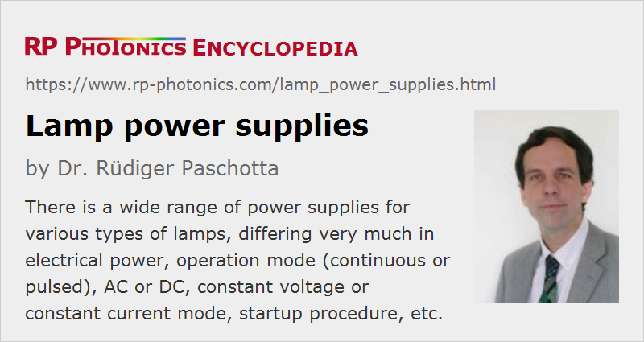

Lamp Power Supplies
Definition: power supplies for lamps
German: Stromversorgungen für Lampen
Category: non-laser light sources
How to cite the article; suggest additional literature
Author: Dr. Rüdiger Paschotta
There is an enormous variety of lamps, many of which require special power supplies. This article explains various important aspects of power supplies for different kinds of lamps.
Constant Voltage
Incandescent lamps are generally operated with a constant electrical voltage, which is the technically simplest approach. If the required operation voltage deviates from the available line voltage, one may employ a power supply which simply modifies and possibly stabilizes the voltage level – for example, a transformer or a switching power supply.
In case that dimming (i.e., a variation of lamp output) is required, one may in principle just reduce the operation voltage. However, it is technically often simpler to use a modified kind of modulation. In case of operation with AC line voltage, one usually uses leading-edge dimmers, which for every half wave of the oscillating voltage open only at a certain variable phase angle, e.g. using a thyristor.
Constant Current Mode
Mostly for various kinds of gas discharge lamps, one uses power supplies which work in constant current mode. That means that the power supply stabilizes a certain drive current, adjusting the applied voltage accordingly. For gas discharge lamps, this is typically required, not necessarily because of a negative differential impedance – which actually does not occur in the usual operation point of many arc lamps –, but because the impedance is a quite variable quantity, depending on the variable plasma pressure, transverse extension of the arc, plasma temperature, etc. In that situation, current stabilization provides the most stable operation mode.
Simple DC circuits regulate the current with a transistor as a kind of variable resistor. That technique, however, is not very power-efficient, if a substantial variation of the lamp operation voltage must be allowed for. Far more efficient solutions are available, particularly based on switching power supplies (see below).
Driving Flash Lamps with Current Pulses
For flash lamps, other technical approaches are required, as explained in detail in the article on flash lamps.
Alternating or Direct Current
Simple incandescent lamps including halogen lamps can easily be operated with an alternating voltage of e.g. 50 Hz or 60 Hz frequency as obtained from the power grid. The thermal capacity of the lamp filament is large enough to minimize the oscillation of the light output associated with the oscillating electric power.
Some gas discharge lamps – for example, the common fluorescent lamps – can also be operated in AC mode, requiring only relatively simple additional electrical circuitry. A simple standard circuit is shown in the article on fluorescent lamps.
Many other gas discharge lamps are operated with direct current (DC). A substantial advantage can be that each electrode then has a dedicated function, being the cathode or the anode, and its design can be optimized independently. For example, high-power arc lamps usually have a pointed cathode, while the anode is more rounded. Another advantage is that the regular current interruption is avoided, which might extinguish the electric discharge. (Using a high enough AC frequency would also avoid that problem.) Further, an oscillation of the optical output power is also avoided in DC mode.
Lamp Startup
Incandescent lamps do not require any special startup procedure; it is only that in the initial fraction of a second they draw a substantially higher current, and a power supply (including its protective fuses) must be able to tolerate that. Some drop of supply voltage in that moment can actually be good for the lamp, slowing down the temperature rise and therefore decrease the impact on lamp life.
Gas discharge lamps require some triggering for startup. This may involve the application of a much increased voltage between anode and cathode for a short while, or the use of an additional trigger electrode. The latter is often operated with a separate trigger transformer. The details are different between arc lamps and flash lamps and can also substantially depend on the detailed type of lamp. For example, power supplies for arc lamps often first apply a high-voltage trigger pulse and then a booster pulse with lower voltage but more energy before the main circuit can take over, supplying the regular operation current.
For flash lamps, there is a variety of different triggering techniques; see the article on flash lamps for more details.
Because of the critical details of triggering, a lamp power supply should be well adapted to the particular type of gas discharge lamp. Its quality can have a substantial impact not only on the reliability of lamp startup and the resulting timing jitter, but also on the lamp lifetime.
Power Efficiency
Particularly for high-power lamps, energy efficiency usually matters, and can easily be obtained with modern electronics. Frequently, one uses some kind of switching power supply, operating at a relatively high frequency and requiring only a relatively compact inductors or transformers.
Cable Connections, Electric Hazards and Electromagnetic Interference Problems
As gas discharge lamps usually require substantial voltages, particularly in the startup phase, serious electrical hazards can arise if a user can touch a wire, e.g. of a damaged cable between power supply and lamp, or at a lamp socket.
Flash lamps require quite high peak currents – even versions with relatively moderate pulse energies. The cables between power supply and lamp must then have a low impedance – not only in terms of ohmic resistivity, but also in terms of inductance. Often, the cable length needs to be quite limited. It can be preferable to even integrate the powerful supplies of liquid into the lamp housing.
High peak currents also raise the risk of electromagnetic interference problems. Here, careful shielding is required.
Additional Features
Power supplies may offer various additional features:
- Particularly for flash lamps, they may have features for automatic periodic triggering or simply using an input trigger signal.
- Some devices offer a dimmer function.
- There can be an interlock system, e.g. for lamp-pumped lasers in the context of laser safety precautions.
- Some power supplies are integrated with a lamp cooling system, supplying a reliable flow of cooling water with controlled temperature. The lamp supply may automatically be switched off if a problem with the cooling system is detected.
Suppliers
The RP Photonics Buyer's Guide contains 10 suppliers for lamp power supplies.
Questions and Comments from Users
Here you can submit questions and comments. As far as they get accepted by the author, they will appear above this paragraph together with the author’s answer. The author will decide on acceptance based on certain criteria. Essentially, the issue must be of sufficiently broad interest.
Please do not enter personal data here; we would otherwise delete it soon. (See also our privacy declaration.) If you wish to receive personal feedback or consultancy from the author, please contact him e.g. via e-mail.
By submitting the information, you give your consent to the potential publication of your inputs on our website according to our rules. (If you later retract your consent, we will delete those inputs.) As your inputs are first reviewed by the author, they may be published with some delay.
See also: gas discharge lamps, arc lamps, flash lamps
and other articles in the category non-laser light sources
|  |
If you like this page, please share the link with your friends and colleagues, e.g. via social media:
These sharing buttons are implemented in a privacy-friendly way!